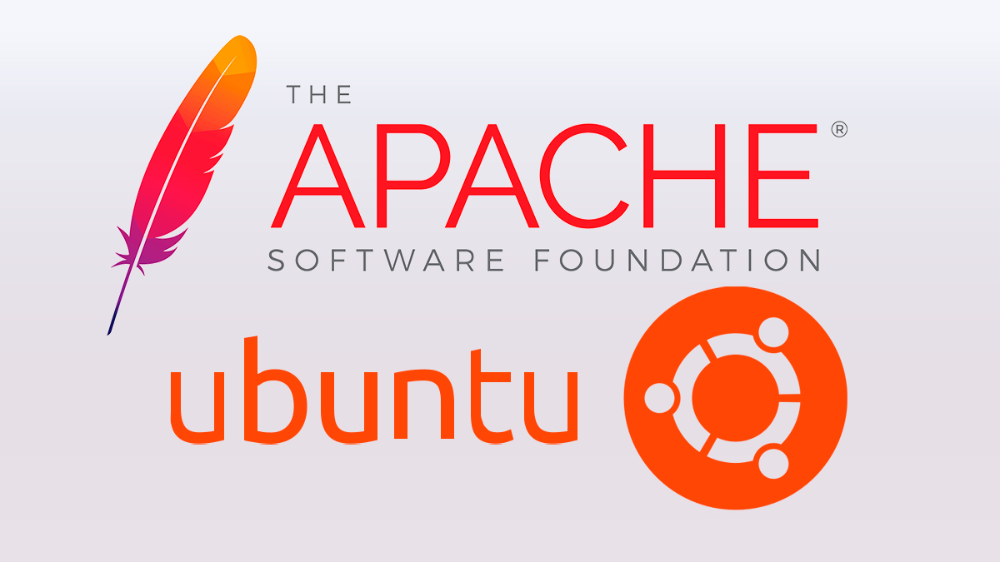
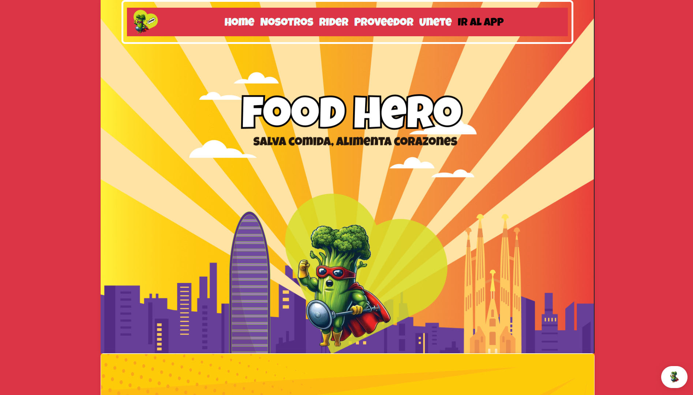

Sobre mí
Soy estudiante de Administración de Sistemas Informáticos en Red (ASIR) con formación en Sistemas Microinformáticos y Redes. Me apasiona la administración de sistemas, las redes, la virtualización y el soporte técnico. Busco seguir creciendo profesionalmente dentro del sector IT.
Habilidades Técnicas
Proyectos

Servidor Apache HTTPS
Configuración de servidor Apache en Ubuntu Server con certificados SSL y dominios virtuales.

Active Directory
Administración de usuarios, grupos, GPOs y permisos compartidos.

Virtualización
Creación de laboratorios mediante VirtualBox y VMware.

Desarrollo Web
Mantenimiento y desarrollo de páginas web utilizando HTML, CSS, JavaScript y PHP.
Experiencia
Técnico Informático Preventivo
I3E Informática
2025 - Actualidad
Prácticas de Grado Superior
Life Informática
2024
Prácticas de Grado Medio
Bachiller
2021
Contacto
📧 davidneriz40@gmail.com
📞 626 576 677
📍 Granollers, Barcelona
💼 LinkedIn: Añade aquí tu enlace
💻 GitHub: Añade aquí tu GitHub